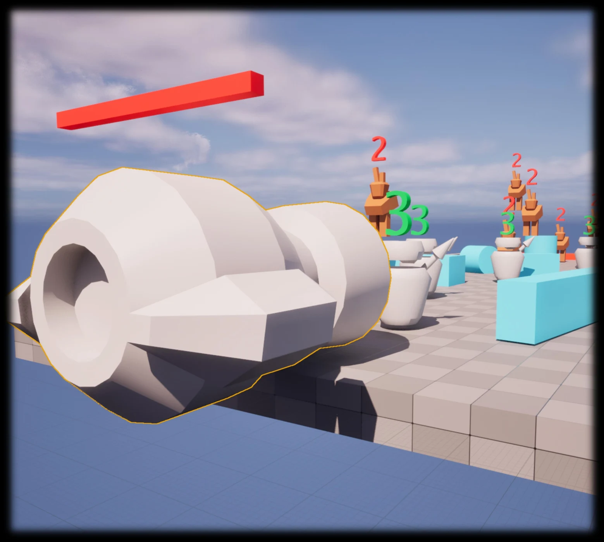
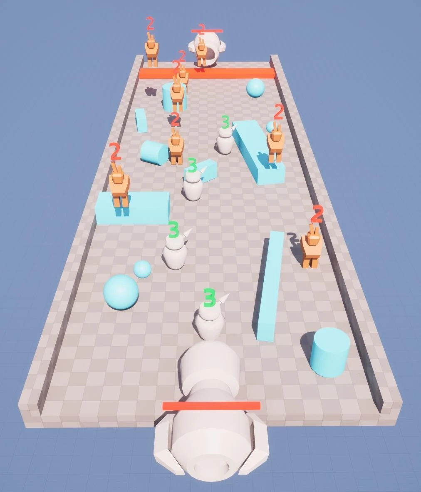
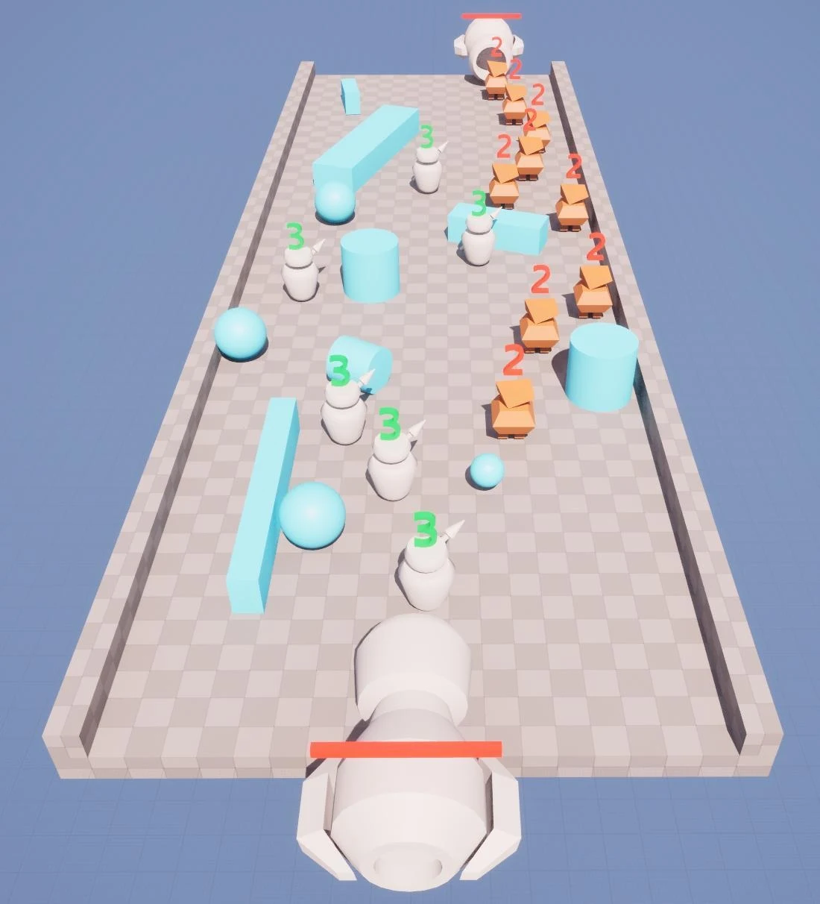
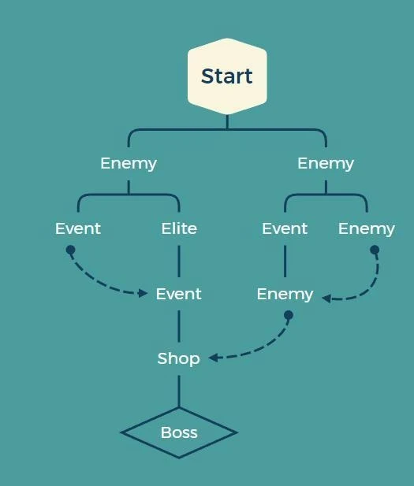

局内升级
用当前流程中的强化改变炮台、单位或道具的表现，形成这一局的策略选择。
用横向移动炮台组织单位部署，把实时战斗与随机路线连接起来。

设计起点来自短视频广告里“炮台发射士兵作战”的玩法呈现：实际游戏与广告体验的差异，促使我尝试设计自己的版本。方案结合即时部署、兵种组合与 Roguelike 路线选择。
玩家用 A / D 横向移动炮台，通过鼠标切换兵种或使用技能卡。双方单位按固定频率发射，沿各自轨迹与速度前进，与敌方单位碰撞时战斗，摧毁敌方炮台即可获胜。


| 敌人 | 机制与设计意图 |
|---|---|
| Chubby Monster / 坦克型 | 圆润的外观传达坦克型特征，作为早期基础敌人帮助玩家熟悉战斗节奏。 |
| Migraine / 机制型 | 只在半边战场部署单位；开阔半场与复杂障碍区并置，让正面推进与绕行产生不同条件。 |
| Rabbit / 跳跃型 | 跳跃移动减弱障碍影响，入口附近的陷阱要求玩家寻找可攻击区域。 |
| Spider / 群体型 | 体型小、数量多、移动不规则，以群体压力考验此前积累的部署与战斗技巧。 |

战斗奖励包含升级点或新单位；事件与商店也提供获得强化的机会。随机路线将连续战斗与不同奖励选择联系起来。
用当前流程中的强化改变炮台、单位或道具的表现，形成这一局的策略选择。
通过初次通关或里程碑解锁新物品，并随游戏推进开放更高难度。
概念阶段约 2–3 个月，用于硕士申请。单人完成玩法、系统、关卡流程、敌人机制与美术资产设计。
目前正在基于原概念继续开发。以上图像为原概念作品中的设计素材。